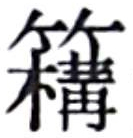
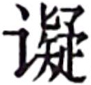
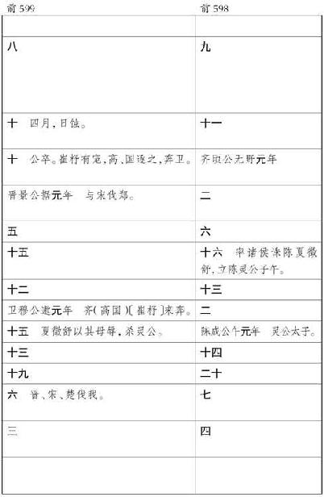

史记卷一百二十八
龟策列传第六十八
太史公 曰：自古圣王将建国受命，兴动事业，何尝不宝卜筮以助善！唐虞 以上，不可记已。自三代 之兴，各据祯祥。涂山 之兆从而夏启 世，飞燕之卜顺故殷 兴，百谷之筮吉故周 王。王者决定诸疑，参以卜筮，断以蓍龟，不易之道也。
蛮夷氐羌 虽无君臣之序，亦有决疑之卜。或以金石，或以草木，国不同俗。然皆可以战伐攻击，推兵求胜，各信其神，以知来事。
略闻夏殷 欲卜者，乃取蓍龟，已则弃去之，以为龟藏则不灵，蓍久则不神。至周室 之卜官，常宝藏蓍龟；又其大小先后，各有所尚，要其归等耳。或以为圣王遭事无不定，决疑无不见，其设稽神求问之道者，以为后世衰微，愚不师智，人各自安，化分为百室，道散而无垠，故推归之至微，要絜于精神也。或以为昆虫之所长，圣人不能与争。其处吉凶，别然否，多中于人。至高祖 时，因秦 太卜官。天下始定，兵革未息。及孝惠 享国日少，吕后 女主，孝文 、孝景 因袭掌故，未遑讲试，虽父子畴官，世世相传，其精微深妙，多所遗失。至今上即位，博开艺能之路，悉延百端之学，通一伎之士咸得自效，绝伦超奇者为右，无所阿私，数年之间，太卜大集。会上欲击匈奴 ，西攘大宛 ，南收百越 ，卜筮至预见表象，先图其利。及猛将推锋执节，获胜于彼，而蓍龟时日亦有力于此。上尤加意，赏赐至或数千万。如丘子明 之属，富溢贵宠，倾于朝廷。至以卜筮射蛊道，巫蛊时或颇中。素有眦睚不快，因公行诛，恣意所伤，以破族灭门者，不可胜数。百僚荡恐，皆曰龟策能言。后事觉奸穷，亦诛三族。
夫摓捷策定数，灼龟观兆，变化无穷，是以择贤而用占焉，可谓圣人重事者乎！周公 卜三龟，而武王 有瘳。纣 为暴虐，而元龟不占。晋文 将定襄王 之位，卜得黄帝 之兆，卒受彤弓之命。献公 贪骊姬 之色，卜而兆有口象，其祸竟流五世。楚灵 将背周室 ，卜而龟逆，终被乾谿 之败。兆应信诚于内，而时人明察见之于外，可不谓两合者哉！君子谓夫轻卜筮，无神明者，悖； 背人道，信祯祥者，鬼神不得其正。故书 建稽疑，五谋而卜筮居其二，五占从其多，明有而不专之道也。
余至江南
，观其行事，问其长老，云龟千岁乃游莲叶之上，蓍百茎共一根。又其所生，兽无虎狼，草无毒螫。江
傍家人常畜龟饮食之，以为能导引致气，有益于助衰养老，岂不信哉！
褚先生
曰：臣以通经术，受业博士，治春秋
，以高第为郎，幸得宿卫，出入宫殿中十有馀年。窃好太史公传
。太史公之传
曰：“三王
不同龟，四夷各异卜，然各以决吉凶，略窥其要，故作龟策列传
。”臣往来长安
中，求龟策列传
不能得，故之大卜官，问掌故文学长老习事者，写取龟策卜事，编于下方。
闻古五帝 、三王 发动举事，必先决蓍龟。传曰：“下有伏灵，上有兔丝；上有捣蓍，下有神龟。”所谓伏灵者，在兔丝之下，状似飞鸟之形。新雨已，天清静无风，以夜捎兔丝去之，即以 烛此地，烛之火灭，即记其处，以新布四丈环置之，明即掘取之，入四尺至七尺，得矣，过七尺不可得。伏灵者，千岁松根也，食之不死。闻蓍生满百茎者，其下必有神龟守之，其上常有青云覆之。传曰：“天下和平，王道得，而蓍茎长丈，其丛生满百茎。”方今世取蓍者，不能中古法度，不能得满百茎长丈者，取八十茎已上，蓍长八尺，即难得也。人民好用卦者，取满六十茎已上，长满六尺者，即可用矣。记曰：“能得名龟者，财物归之，家必大富至千万。”一曰“北斗龟”，二曰“南辰龟”，三曰“五星龟”，四曰“八风龟”，五曰“二十八宿龟”，六曰“日月龟”，七曰“九州龟”，八曰“玉龟”：凡八名龟。龟图各有文在腹下，文云云者，此某之龟也。略记其大指，不写其图。取此龟不必满尺二寸，民人得长七八寸，可宝矣。今夫珠玉宝器，虽有所深藏，必见其光，必出其神明，其此之谓乎！故玉处于山而木润，渊生珠而岸不枯者，润泽之所加也。明月之珠出于江海，藏于蚌中，蚗龙伏之。王者得之，长有天下，四夷宾服。能得百茎蓍，并得其下龟以卜者，百言百当，足以决吉凶。
神龟出于江水 中，庐江郡 常岁时生龟长尺二寸者二十枚输太卜官，太卜官因以吉日剔取其腹下甲。龟千岁乃满尺二寸。王者发军行将，必钻龟庙堂之上，以决吉凶。今高庙 中有龟室，藏内以为神宝。
传曰：“取前足臑骨穿佩之，取龟置室西北隅悬之，以入深山大林 中，不惑。”臣为郎时，见万毕石朱方 ，传曰：“有神龟在江南 嘉林中。嘉林者，兽无虎狼，鸟无鸱枭，草无毒螫，野火不及，斧斤不至，是为嘉林。龟在其中，常巢于芳莲之上。左胁书文曰‘甲子重光，得我者匹夫为人君，有土正，诸侯得我为帝王。’求之于白蛇蟠杅林 中者，斋戒以待， 然，状如有人来告之，因以醮酒佗发，求之三宿而得。”由是观之，岂不伟哉！故龟可不敬与？
南方老人用龟支床足，行二十馀岁，老人死，移床，龟尚生不死。龟能行气导引。问者曰：“龟至神若此，然太卜官得生龟，何为辄杀取其甲乎？”近世江
上人有得名龟，畜置之，家因大富。与人议，欲遣去。人教杀之勿遣，遣之破人家。龟见梦曰：“送我水中，无杀吾也。”其家终杀之。杀之后，身死，家不利。人民与君王者异道。人民得名龟，其状类不宜杀也。以往古故事言之，古明王圣主皆杀而用之。
宋元王 时得龟，亦杀而用之。谨连其事于左方，令好事者观择其中焉。
宋元王 二年，江 使神龟使于河 ，至于泉阳 ，渔者豫且 举网得而囚之，置之笼中。夜半，龟来见梦于宋元王 曰：“我为江 使于河 ，而幕网当吾路。泉阳豫且 得我，我不能去。身在患中，莫可告语。王有德义，故来告诉。”元王 惕然而悟。乃召博士卫平 而问之曰：“今寡人梦见一丈夫，延颈而长头，衣玄绣之衣而乘辎车，来见梦于寡人曰：‘我为江 使于河 ，而幕网当吾路。泉阳豫且 得我，我不能去。身在患中，莫可告语。王有德义，故来告诉。’是何物也？”卫平 乃援式而起，仰天而视月之光，观斗 所指，定日处乡。规矩为辅，副以权衡。四维已定，八卦相望。视其吉凶，介虫先见。乃对元王 曰：“今昔壬子，宿在牵牛 。河 水大会，鬼神相谋。汉 正南北，江河 固期，南风新至，江 使先来。白云壅汉 ，万物尽留。斗 柄指日，使者当囚。玄服而乘辎车，其名为龟。王急使人问而求之。”王曰：“善。”
于是王乃使人驰而往问泉阳 令曰：“渔者几何家？名谁为豫且 ？豫且 得龟，见梦于王，王故使我求之。”泉阳 令乃使吏案籍视图，水上渔者五十五家，上流之庐，名为豫且 。泉阳 令曰：“诺。”乃与使者驰而问豫且 曰：“今昔汝渔何得？”豫且 曰：“夜半时举网得龟。”使者曰：“今龟安在？”曰：“在笼中。”使者曰：“王知子得龟，故使我求之。”豫且 曰：“诺。”即系龟而出之笼中，献使者。
使者载行，出于泉阳 之门。正昼无见，风雨晦冥。云盖其上，五采青黄；雷雨并起，风将而行。入于端门，见于东箱。身如流水，润泽有光。望见元王 ，延颈而前，三步而止，缩颈而却，复其故处。元王 见而怪之，问卫平 曰：“龟见寡人，延颈而前，以何望也？缩颈而复，是何当也？”卫平 对曰：“龟在患中，而终昔囚，王有德义，使人活之。今延颈而前，以当谢也，缩颈而却，欲亟去也。”元王 曰：“善哉！神至如此乎，不可久留；趣驾送龟，勿令失期。”
卫平 对曰：“龟者是天下之宝也，先得此龟者为天子，且十言十当，十战十胜。生于深渊，长于黄土。知天之道，明于上古。游三千岁，不出其域。安平静正，动不用力。寿蔽天地，莫知其极。与物变化，四时变色。居而自匿，伏而不食。春仓夏黄，秋白冬黑。明于阴阳，审于刑德。先知利害，察于祸福。以言而当，以战而胜，王能宝之，诸侯尽服。王勿遣也，以安社稷。”
元王 曰：“龟甚神灵，降于上天，陷于深渊，在患难中。以我为贤，德厚而忠信，故来告寡人。寡人若不遣也，是渔者也。渔者利其肉，寡人贪其力，下为不仁，上为无德。君臣无礼，何从有福？寡人不忍，奈何勿遣！”
卫平 对曰：“不然。臣闻盛德不报，重寄不归；天与不受，天夺之宝。今龟周流天下，还复其所，上至苍天，下薄泥涂。还遍九州，未尝愧辱，无所稽留。今至泉阳 ，渔者辱而囚之。王虽遣之，江河 必怒，务求报仇。自以为侵，因神与谋。淫雨不霁，水不可治。若为枯旱，风而扬埃，蝗虫暴生，百姓失时。王行仁义，其罚必来。此无佗故，其祟在龟。后虽悔之，岂有及哉！王勿遣也。”
元王 慨然而叹曰：“夫逆人之使，绝人之谋，是不暴乎？取人之有，以自为宝，是不强乎？寡人闻之，暴得者必暴亡，强取者必后无功。桀纣 暴强，身死国亡。今我听子，是无仁义之名而有暴强之道。江河 为汤武 ，我为桀纣 。未见其利，恐离其咎。寡人狐疑，安事此宝，趣驾送龟，勿令久留。”
卫平 对曰：“不然，王其无患。天地之间，累石为山。高而不坏，地得为安。故云物或危而顾安，或轻而不可迁；人或忠信而不如诞谩，或丑恶而宜大官，或美好佳丽而为众人患。非神圣人，莫能尽言。春秋冬夏，或暑或寒。寒暑不和，贼气相奸。同岁异节，其时使然。故令春生夏长，秋收冬藏。或为仁义，或为暴强。暴强有乡，仁义有 时。万物尽然，不可胜治。大王听臣，臣请悉言之。天出五色，以辨白黑。地生五谷，以知善恶。人民莫知辨也，与禽兽相若。谷居而穴处，不知田作。天下祸乱，阴阳相错。匆匆疾疾，通而不相择。妖孽数见，传为单薄。圣人别其生，使无相获。禽兽有牝牡，置之山原；鸟有雌雄，布之林泽；有介之虫，置之溪谷。故牧人民，为之城郭，内经闾术，外为阡陌。夫妻男女，赋之田宅，列其室屋。为之图籍，别其名族。立官置吏，劝以爵禄。衣以桑麻，养以五谷。耕之耰之， 之耨之。口得所嗜，目得所美，身受其利。以是观之，非强不至。故曰田者不强，囷仓不盈；商贾不强，不得其赢；妇女不强，布帛不精；官御不强，其势不成；大将不强，卒不使令；侯王不强，没世无名。故云强者，事之始也，分之理也，物之纪也。所求于强，无不有也。王以为不然，王独不闻玉椟只雉，出于昆山 ；明月之珠，出于四海；镌石拌蚌，传卖于市：圣人得之，以为大宝。大宝所在，乃为天子。今王自以为暴，不如拌蚌于海也；自以为强，不过镌石于昆山也。取者无咎，宝者无患。今龟使来抵网，而遭渔者得之，见梦自言，是国之宝也，王何忧焉。”
元王 曰：“不然。寡人闻之，谏者福也，谀者贼也。人主听谀，是愚惑也。虽然，祸不妄至，福不徒来。天地合气，以生百财。阴阳有分，不离四时，十有二月，日至为期。圣人彻焉，身乃无灾。明王用之，人莫敢欺。故云福之至也，人自生之；祸之至也，人自成之。祸与福同，刑与德双。圣人察之，以知吉凶。桀纣 之时，与天争功，拥遏鬼神，使不得通。是固已无道矣，谀臣有众。桀 有谀臣，名曰赵梁 。教为无道，劝以贪狼。系汤夏台 ，杀关龙逢 。左右恐死，偷谀于傍。国危于累卵，皆曰无伤。称乐万岁，或曰未央。蔽其耳目，与之诈狂。汤 卒伐桀 ，身死国亡。听其谀臣，身独受殃。春秋 著之，至今不忘。纣 有谀臣，名为左彊 。夸而目巧，教为象郎。将至于天，又有玉床。犀玉之器，象箸而羹。圣人剖其心，壮士斩其胻。箕子 恐死，被发佯狂。杀周太子历 ，囚文王昌 。投之石室，将以昔至明。阴兢 活之，与之俱亡。入于周 地，得太公望 。兴卒聚兵，与纣 相攻。文王 病死，载尸以行。太子发 代将，号为武王 。战于牧野 ，破之华山 之阳。纣 不胜败而还走，围之象郎。自杀宣室 ，身死不葬。头悬车轸，四马曳行。寡人念其如此，肠如涫汤。是人皆富有天下而贵至天子，然而大傲。欲无猒时，举事而喜高，贪很而骄。不用忠信，听其谀臣，而为天下笑。今寡人之邦，居诸侯之间，曾不如秋毫。举事不当，又安亡逃！”
卫平 对曰：“不然。河 虽神贤，不如昆仑 之山；江 之源理，不如四海，而人尚夺取其宝，诸侯争之，兵革为起。小国见亡，大国危殆，杀人父兄，虏人妻子，残国灭庙，以争此宝。战攻分争，是暴强也。故云取之以暴强而治以文理，无逆四时，必亲贤士；与阴阳化，鬼神为使；通于天地，与之为友。诸侯宾服，民众殷喜。邦家安宁，与世更始。汤武 行之，乃取天子；春秋 著之，以为经纪。王不自称汤武 ，而自比桀纣 。桀纣 为暴强也，固以为常。桀 为瓦室，纣 为象郎。征丝灼之，务以费氓。赋敛无度，杀戮无方。杀人六畜，以韦为囊。囊盛其血，与人悬而射之，与天帝争强。逆乱四时，先百鬼尝。谏者辄死，谀者在傍。圣人伏匿，百姓莫行。天数枯旱，国多妖祥。螟虫岁生，五谷不成。民不安其处，鬼神不享。飘风日起，正昼晦冥。日月并蚀，灭息无光。列星奔乱，皆绝纪纲。以是观之，安得久长！虽无汤武 ，时固当亡。故汤 伐桀 ，武王 克纣 ，其时使然。乃为天子，子孙续世；终身无咎，后世称之，至今不已。是皆当时而行，见事而强，乃能成其帝王。今龟，大宝也，为圣人使，传之贤王。不用手足，雷电将之；风雨送之，流水行之。侯王有德，乃得当之。今王有德而当此宝，恐不敢受；王若遣之，宋 必有咎。后虽悔之，亦无及已。”
元王 大悦而喜。于是元王 向日而谢，再拜而受。择日斋戒，甲乙最良。乃刑白雉，及与骊羊；以血灌龟，于坛中央。以刀剥之，身全不伤。脯酒礼之，横其腹肠。荆支卜之，必制其创。理达于理，文相错迎。使工占之，所言尽当。邦福重宝，闻于傍乡。杀牛取革，被郑之桐。草木毕分，化为甲兵。战胜攻取，莫如元王 。元王 之时，卫平 相宋 ，宋国 最强，龟之力也。
故云神至能见梦于元王 ，而不能自出渔者之笼。身能十言尽当，不能通使于河 ，还报于江 。贤能令人战胜攻取，不能自解于刀锋，免剥刺之患。圣能先知亟见，而不能令卫平 无言。言事百全，至身而挛；当时不利，又焉事贤！贤者有恒常，士有适然。是故明有所不见，听有所不闻；人虽贤，不能左画方，右画圆；日月之明，而时蔽于浮云。羿 名善射，不如雄渠 、蠭门 ；禹名为辩智，而不能胜鬼神。地柱折，天故毋椽，又奈何责人于全？孔子 闻之曰：“神龟知吉凶，而骨直空枯。日为德而君于天下，辱于三足之乌。月为刑而相佐，见食于虾蟆。蝟辱于鹊，腾蛇之神而殆于即且。竹外有节理，中直空虚；松柏为百木长，而守门闾。日辰不全，故有孤虚。黄金有疵，白玉有瑕。事有所 疾，亦有所徐。物有所拘，亦有所据。罔有所数，亦有所疏。人有所贵，亦有所不如。何可而适乎？物安可全乎？天尚不全，故世为屋，不成三瓦而陈之，以应之天。天下有阶，物不全乃生也。”
褚先生 曰：渔者举网而得神龟，龟自见梦宋元王 ，元王 召博士卫平 告以梦龟状，平 运式，定日月，分衡度，视吉凶，占龟与物色同，平 谏王留神龟以为国重宝，美矣。古者筮必称龟者，以其令名，所从来久矣。余述而为传。
三月 二月 正月 十二月 十一月 中关内高外下 四月首仰 足开 肣开 首俛大 五月 横吉 首俛大 六月 七月 八月 九月 十月
卜禁曰：子亥戌不可以卜及杀龟。日中如食已卜。暮昏龟之徼也，不可以卜。庚辛可以杀，及以钻之。常以月旦祓龟，先以清水澡之，以卵祓之，乃持龟而遂之，若常以为祖。人若已卜不中，皆祓之以卵，东向立，灼以荆若刚木，土卵指之者三，持龟以卵周环之，祝曰：“今日吉，谨以粱卵焍黄祓去玉灵之不祥。”玉灵必信以诚，知万事之情，辩兆皆可占。不信不诚，则烧玉灵，扬其灰，以征后龟。其卜必北向，龟甲必尺二寸。
卜先以造灼钻，钻中已，又灼龟首，各三；又复灼所钻中曰正身，灼首曰正足，各三。即以造三周龟，祝曰：“假之玉灵夫子 。夫子玉灵，荆灼而心，令而先知。而上行于天，下行于渊，诸灵数酂，莫如汝信。今日良日，行一良贞。某欲卜某，即得而喜，不得而悔。即得，发乡我身长大，首足收人皆上偶。不得，发乡我身挫折，中外不相应，首足灭去。”
灵龟卜祝曰：“假之灵龟，五巫五灵，不如神龟之灵，知人死，知人生。某身良贞，某欲求某物。即得也，头见足发，内外相应；即不得也，头仰足肣，内外自垂。可得占。”
卜占病者祝曰：“今某病困。死，首上开，内外交骇，身节折；不死，首仰足肣。”卜病者祟曰：“今病有祟无呈，无祟有呈。兆有中祟有内，外祟有外。”
卜系者出不出。不出，横吉安；若出，足开首仰有外。
卜求财物，其所当得。得，首仰足开，内外相应；即不得，呈兆首仰足肣。
卜有卖若买臣妾马牛。得之，首仰足开，内外相应；不得，首仰足 肣，呈兆若横吉安。
卜击盗聚若干人，在某所，今某将卒若干人，往击之。当胜，首仰足开身正，内自桥，外下；不胜，足肣首仰，身首内下外高。
卜求当行不行。行，首足开；不行，足肣首仰，若横吉安，安不行。
卜往击盗，当见不见。见，首仰足肣有外；不见，足开首仰。
卜往候盗，见不见。见，首仰足肣，肣胜有外；不见，足开首仰。
卜闻盗来不来。来，外高内下，足肣首仰；不来，足开首仰，若横吉安，期之自次。
卜迁徙去官不去。去，足开有肣外首仰；不去，自去，即足肣，呈兆若横吉安。
卜居官尚吉不。吉，呈兆身正，若横吉安；不吉，身节折，首仰足开。
卜居室家吉不吉。吉，呈兆身正，若横吉安；不吉，身节折，首仰足开。
卜岁中禾稼孰不孰。孰，首仰足开，内外自桥外自垂；不孰，足肣首仰有外。
卜岁中民疫不疫。疫，首仰足肣，身节有强外；不疫，身正首仰足开。
卜岁中有兵无兵。无兵，呈兆若横吉安；有兵，首仰足开，身作外强情。
卜见贵人吉不吉。吉，足开首仰，身正，内自桥；不吉，首仰，身节折，足肣有外，若无渔。
卜请谒于人得不得。得，首仰足开，内自桥；不得，首仰足肣有外。
卜追亡人当得不得。得，首仰足肣，内外相应；不得，首仰足开，若横吉安。
卜渔猎得不得。得，首仰足开，内外相应；不得，足肣首仰，若横吉安。
卜行遇盗不遇。遇，首仰足开，身节折，外高内下；不遇，呈兆。
卜天雨不雨。雨，首仰有外，外高内下；不雨，首仰足开，若横吉安。
卜天雨霁不霁。霁，呈兆足开首仰；不霁，横吉。
命曰横吉安。以占病，病甚者一日不死；不甚者卜日瘳，不死。系者重罪不出，轻罪环出；过一日不出，久毋伤也。求财物买臣妾马牛，一日环得；过一日不得。行者不行。来者环至；过食时不至，不来。击盗不行，行不遇；闻盗不来。徙官不徙。居官家室皆吉。岁稼不孰。民疾疫无疾。岁中无兵。见人行，不行不喜。请谒人不行不得。追亡人渔猎不得。行不遇盗。雨不雨。霁不霁。
命曰呈兆。病者不死。系者出。行者行。来者来。市买得。追亡人得，过一日不得。问行者不到。
命曰柱彻。卜病不死。系者出。行者行。来者来。市买不得。忧者毋忧。追亡人不得。
命曰首仰足肣有内无外。占病，病甚不死。系者解。求财物买臣妾马牛不得。行者闻言不行。来者不来。闻盗不来。闻言不至。徙官闻言不徙。居官有忧。居家多灾。岁稼中孰。民疾疫多病。岁中有兵，闻言不开。见贵人吉。请谒不行，行不得善言。追亡人不得。渔猎不得。行不遇盗。雨不雨甚。霁不霁。故其莫字皆为首备。问之曰，备者仰也，故定以为仰。此私记也。
命曰首仰足肣有内无外。占病，病甚不死。系者不出。求财买臣妾不得。行者不行。来者不来。击盗不见。闻盗来，内自惊，不来。徙官不徙。居官家室吉。岁稼不孰。民疾疫有病甚。岁中无兵。见贵人吉。请谒追亡人不得。亡财物，财物不出得。渔猎不得。行不遇盗。雨不雨。霁不霁。凶。
命曰呈兆首仰足肣。以占病，不死。系者未出。求财物买臣妾马牛不得。行不行。来不来。击盗不相见。闻盗来不来。徙官不徙。居官久多忧。居家室不吉。岁稼不孰。民病疫。岁中毋兵。见贵人不吉。请谒不得。渔猎得少。行不遇盗。雨不雨。霁不霁。不吉。
命曰呈兆首仰足开。以占病，病笃死。系囚出。求财物买臣妾马牛不得。行者行。来者来。击盗不见盗。闻盗来不来。徙官徙。居官不久。居家室不吉。岁稼不孰。民疾疫有而少。岁中毋兵。见贵人不见吉。请谒追亡人渔猎不得。行遇盗。雨不雨。霁小吉。
命曰首仰足肣。以占病，不死。系者久，毋伤也。求财物买臣妾马牛不得。行者不行。击盗不行。来者来。闻盗来。徙官闻言不徙。居家室不吉。岁稼不孰。民疾疫少。岁中毋兵。见贵人得见。 请谒追亡人渔猎不得。行遇盗。雨不雨。霁不霁。吉。
命曰首仰足开有内。以占病者，死。系者出。求财物买臣妾马牛不得。行者行。来者来。击盗行不见盗。闻盗来不来。徙官徙。居官不久。居家室不吉。岁孰。民疾疫有而少。岁中毋兵。见贵人不吉。请谒追亡人渔猎不得。行不遇盗。雨霁。霁小吉，不霁吉。
命曰横吉内外自桥。以占病，卜日毋瘳死。系者毋罪出。求财物买臣妾马牛得。行者行。来者来。击盗合交等。闻盗来来。徙官徙。居家室吉。岁孰。民疫无疾。岁中无兵。见贵人请谒追亡人渔猎得。行遇盗。雨霁，雨霁大吉。
命曰横吉内外自吉。以占病，病者死。系不出。求财物买臣妾马牛追亡人渔猎不得。行者不来。击盗不相见。闻盗不来。徙官徙。居官有忧。居家室见贵人请谒不吉。岁稼不孰。民疾疫。岁中无兵。行不遇盗。雨不雨。霁不霁。不吉。
命曰渔人。以占病者，病者甚，不死。系者出。求财物买臣妾马牛击盗请谒追亡人渔猎得。行者行来。闻盗来不来。徙官不徙。居家室吉。岁稼不孰。民疾疫。岁中毋兵。见贵人吉。行不遇盗。雨不雨。霁不霁。吉。
命曰首仰足肣内高外下。以占病，病者甚，不死。系者不出。求财物买臣妾马牛追亡人渔猎得。行不行。来者来。击盗胜。徙官不徙。居官有忧，无伤也。居家室多忧病。岁大孰。民疾疫。岁中有兵不至。见贵人请谒不吉。行遇盗。雨不雨。霁不霁。吉。
命曰横吉上有仰下有柱。病久不死。系者不出。求财物买臣妾马牛追亡人渔猎不得。行不行。来不来。击盗不行，行不见。闻盗来不来。徙官不徙。居家室见贵人吉。岁大孰。民疾疫。岁中毋兵。行不遇盗。雨不雨。霁不霁。大吉。
命曰横吉榆仰。以占病，不死。系者不出。求财物买臣妾马牛至不得。行不行。来不来。击盗不行，行不见。闻盗来不来。徙官不徙。居官家室见贵人吉。岁孰。岁中有疾疫，毋兵。请谒追亡人不得。渔猎至不得。行不得。行不遇盗。雨霁不霁。小吉。
命曰横吉下有柱。以占病，病甚不环有瘳无死。系者出。求财物买臣妾马牛请谒追亡人渔猎不得。行来不来。击盗不合。闻盗来来。徙官居官吉，不久。居家室不吉。岁不孰。民毋疾疫。岁中毋兵。见贵人吉。行不遇盗。雨不雨。霁。小吉。
命曰载所。以占病，环有瘳无死。系者出。求财物买臣妾马牛请谒追亡人渔猎得。行者行。来者来。击盗相见不相合。闻盗来来。徙官徙。居家室忧。见贵人吉。岁孰。民毋疾疫。岁中毋兵。行不遇盗。雨不雨。霁霁。吉。
命曰根格。以占病者，不死。系久毋伤。求财物买臣妾马牛请谒追亡人渔猎不得。行不行。来不来。击盗盗行不合。闻盗不来。徙官不徙。居家室吉。岁稼中。民疾疫无死。见贵人不得见。行不遇盗。雨不雨。大吉。
命曰首仰足肣外高内下。卜有忧，无伤也。行者不来。病久死。求财物不得。见贵人者吉。
命曰外高内下。卜病不死，有祟。市买不得。居官家室不吉。行者不行。来者不来。系者久毋伤。吉。
命曰头见足发有内外相应。以占病者，起。系者出。行者行。来者来。求财物得。吉。
命曰呈兆首仰足开。以占病，病甚死。系者出，有忧。求财物买臣妾马牛请谒追亡人渔猎不得。行不行。来不来。击盗不合。闻盗来来。徙官居官家室不吉。岁恶。民疾疫无死。岁中毋兵。见贵人不吉。行不遇盗。雨不雨。霁。不吉。
命曰呈兆首仰足开外高内下。以占病，不死，有外祟。系者出，有忧。求财物买臣妾马牛，相见不会。行行。来闻言不来。击盗胜。闻盗来不来。徙官居官家室见贵人不吉。岁中。民疾疫有兵。请谒追亡人渔猎不得。闻盗遇盗。雨不雨。霁。凶。
命曰首仰足肣身折内外相应。以占病，病甚不死。击者久不出。求财物买臣妾马牛渔猎不得。行不行。来不来。击盗有用胜。闻盗来来。徙官不徙。居官家室不吉。岁不孰。民疾疫。岁中。有兵不至。见贵人喜。请谒追亡人不得。遇盗凶。
命曰内格外垂。行者不行。来者不来。病者死。系者不出。求财物不得。见人不见。大吉。
命曰横吉内外相应自桥榆仰上柱足肣。以占病，病甚不死。系久，不抵罪。求财物买臣妾马牛请谒追亡人渔猎不得。行不行。来不来。居官家室见贵人吉。徙官不徙。岁不大孰。民疾疫有兵。有兵不会。行遇盗。闻言不见。雨不雨。霁霁。大吉。
命曰头仰足肣内外自垂。卜忧病者甚，不死。居官不得居。行 者行。来者不来。求财物不得。求人不得。吉。
命曰横吉下有柱。卜来者来。卜日即不至，未来。卜病者过一日毋瘳死。行者不行。求财物不得。系者出。
命曰横吉内外自举。以占病者，久不死。系者久不出。求财物得而少。行者不行。来者不来。见贵人见。吉。
命曰内高外下疾轻足发。求财物不得。行者行。病者有瘳。系者不出。来者来。见贵人不见。吉。
命曰外格。求财物不得。行者不行。来者不来。系者不出。不吉。病者死。求财物不得。见贵人见。吉。
命曰内自举外来正足发。行者行。来者来。求财物得。病者久不死。系者不出。见贵人见。吉。
此横吉上柱外内自举足肣。以卜有求得。病不死。系者毋伤，未出。行不行。来不来。见人不见。百事尽吉。
此横吉上柱外内自举柱足以作。以卜有求得。病死环起。系留毋伤，环出。行不行。来不来。见人不见。百事吉。可以举兵。此挺诈有外。以卜有求不得。病不死，数起。系祸罪。闻言毋伤。行不行。来不来。
此挺诈有内。以卜有求不得。病不死，数起。系留祸罪无伤出。行不行。来者不来。见人不见。
此挺诈内外自举。以卜有求得。病不死，系毋罪。行行。来来。田贾市渔猎尽喜。
此狐 。以卜有求不得。病死，难起。系留毋罪难出。可居宅。可娶妇嫁女。行不行。来不来。见人不见。有忧不忧。
。以卜有求不得。病死，难起。系留毋罪难出。可居宅。可娶妇嫁女。行不行。来不来。见人不见。有忧不忧。
此狐彻。以卜有求不得。病者死。系留有抵罪。行不行。来不来。见人不见。言语定。百事尽不吉。
此首俯足肣身节折。以卜有求不得。病者死。系留有罪。望行者不来。行行。来不来。见人不见。
此挺内外自垂。以卜有求不晦。病不死，难起。系留毋罪，难出。行不行。来不来。见人不见。不吉。
此横吉榆仰首俯。以卜有求难得。病难起，不死。系难出，毋伤也。可居家室，以娶妇嫁女。
此横吉上柱载正身节折内外自举。以卜病者，卜日不死，其一日乃死。
此横吉上柱足肣内自举外自垂。以卜病者，卜日不死，其一日乃死。
首俯足诈有外无内。病者占龟未已，急死。卜轻失大，一日不死。
首仰足肣。以卜有求不得。以系有罪。人言语恐之毋伤。行不行。见人不见。
大论曰：外者人也，内者自我也；外者女也，内者男也。首俛者忧。大者身也，小者枝也。大法，病者，足肣者生，足开者死。行者，足开至，足肣者不至。行者，足肣不行，足开行。有求，足开得，足肣者不得。系者，足肣不出，开出。其卜病也，足开而死者，内高而外下也。